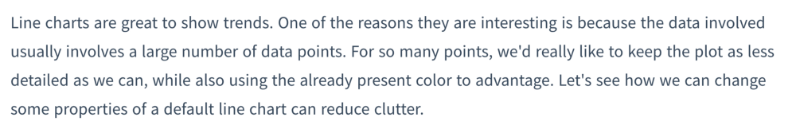
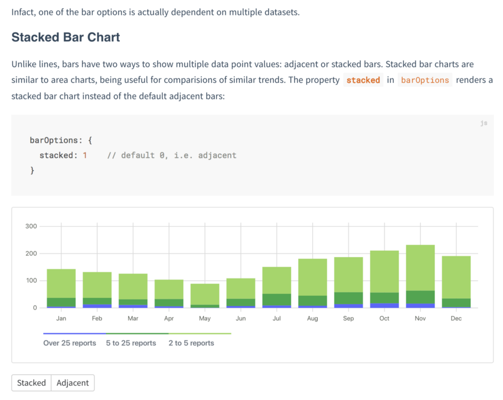
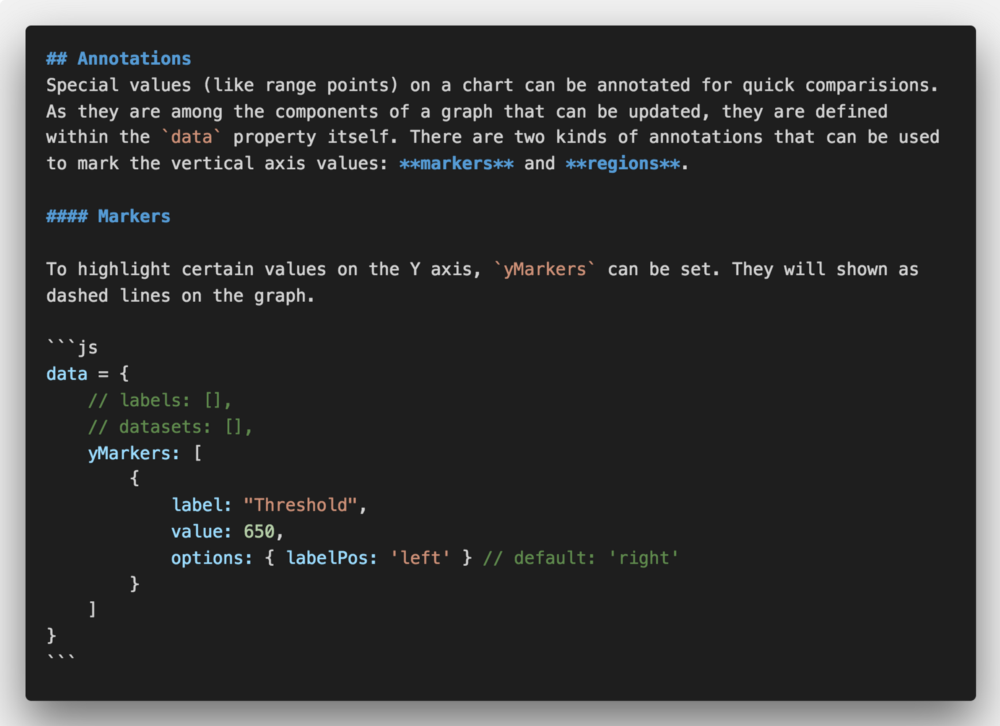
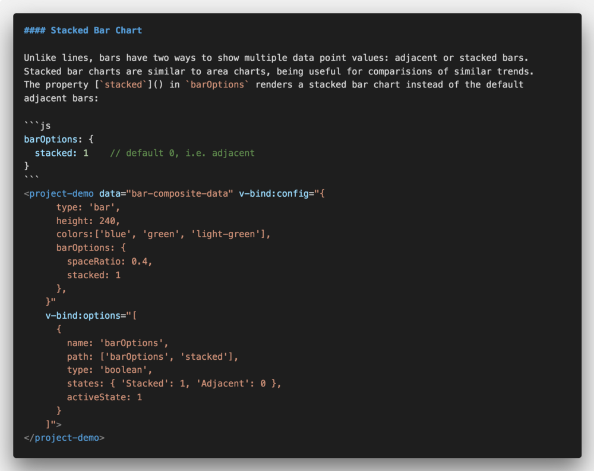

Writing The Docs
Venturing beyond the README
So you’re me and you’re a software dev, and you’re faced with the ultimate task of finally getting around to writing documentation.
You remember the time when you thought it’s not really important to document things if you write computer programs well. You would gloss over your tiny functions, and take pride in always writing readable code (as you assumed), thought-out variable names, and think surely no one will have trouble understanding what you obviously mean.
Of course, you feel you’ve gotten past those delusions. Intent of the code that makes the reader feel like having Matrix-y see-past-the-code-vision, while necessary, isn’t sufficient. Even leaving the end users aside, your future self too may want to come back and make changes. You suddenly start to empathise with them and get to work.
You start with one of your independent projects to kickstart things and to get into the habit of it.
The Humane Way: Writing
To get a taste of what’s ahead, you go with your most used strategy: examples. Instead of reading on how to write docs, you spend hours to read up some great docs examples.
You discover that documentation is one of those technical places that doesn’t feel mechanical. The Python Community looks like it has always managed to be human and professional (despite being open source, that says a lot about discipline); Flask, Requests, The Hitchhiker’s Guide to Python itself. Engaging writing style doesn’t even begin to describe them. The folks over at Write the Docs are a great resource for how to write docs … while demonstrating it themselves. Bootstrap and Vue are amazing projects that use use-cases to clarify the intent of their decisions. Yarn, on the other hand, is a good example of to-the-point reference of all it has to offer. In the realm of small utilities, BlissfulJs is a fresh one to capture attention on how it eases your use of native Javascript.
After all that imbibing, you allow yourself some time to begin composing. To quote Mr. Holmes:
A man should be at his very best and keenest for such nice work as that, and I did not wish to do it when fagged by [tediousness].
You imagine your README as a summary of the stuff you’d like to cover. That means you’ve gotten things like ‘Installation’, ‘Get Started’ and ‘Configuration’ down. So now it’s about the real meat, the API in depth. But it’s already been too late to follow RDD and for all of Kenneth’s talks, you’re here to start them after coding stuff in.
You get down a basic structure for each concept something like:
- What is it / Concept
- Use case / idea / what it is built upon
- How to use it
- What it does/shows [Example]
- Any modifications
Out of which the technical bits from usage to modifications are easy enough:

But the explanation you write turns out to be a … well …
 Ya don’t say.
Ya don’t say.
Just listing each idea this way reminds you of the index at the back of the book, useful in a cheatsheet way. In fact, you have seen a section in the docs that incorporates these: it’s called an API reference. There must be a reason they’re called a reference.
The full-fledged explanation though, looks like it lacks motivation.
Instead, you try and write it with some context:

Progress!
As you document more and more stuff, you’ve started to like redundancy, linking docs all over with property keywords and “as we have seen’s”. In fact, you even add a couple of other optional items to the list:
- Relations
- Gotchas
And while you’re at it, you decide to show them stuff they’ll actually use: forget list outs, we’re here for the stuff we can do.
 [Solved][Feature Request] Stacked Bar Charts
The Medium: Markdown
You decide that content needs a simple medium in plain text, even though all of it has to be converted to HTML in the end. While writing plain HTML is great — after all, HTML has evolved to give meaning to content — you still feel it’s the stage I of reducing complexity. Markdown looks like one such option, with minimum notations to decide the semantics, so that your text is easily translatable to HTML. Also, given that most of the existing documentation of your system exists in markdown, it makes it a consistent choice.

The Interactivity: Demos
You feel you’ve made a fantastic choice to put in a CodePen demo on the landing page. Unfortunately, that makes you get bored soon with your static examples. They sure are indispensable to get your point across. But you remember being blown away by a website that taught you web design in 4 minutes, that engaged you while showing you the instant effect of certain actions.
Since your medium is the web, you’d like to make things more interesting than the back of a cereal box.
So you go ahead and add this:

Given the sheer number of demos you’d have to create, you only wish you had something that rolls out a demo with the desired configuration.
Fortunately, your project is from the remarkable species of JavaScript libs, that is used as:
new LibObj (parent, options)
and most of the options are primitive values. It doesn’t take much code to come up with something that given an option type and values, creates a control to take input and creates an object with the value passed. Moreover, it can also have actions:

Only, this leaves you with a dilemma about the location of storing the demo configuration. The whole point is to keep .md files static, so simply having the config where the demo would be in the markdown itself is a fantasy.
Or is it?
After all, configuration itself is static. You discover Vue components (incidentally, one of the most heavenly examples of docs you’ve ever read), that allow custom configured elements in HTML. And as Vue allows for deferred mounting, it is easy enough to include it in any post process of your documentation generator.
With some effort, you’re able to come up with this:
 Demos in markdown: the combo that for one wild moment makes you feel you’ve reached the pinnacle of configuration over code. O Holy.
You almost feel like this is something markdown should have by default, but think better (or worse) of it.
Hurray for interactivity! But when you try it with the remaining values it … fails?
All this demoing is leading you to bugs you didn’t even know you had. Integration testing, yay.
The Framework: Maintainability
So far your goal has been to keep docs themselves as portable as possible. The next step is the future case of bootstrapping a documentation framework. After going through an old thread, you decide to explore some of the widely used options today.
Three things are on your mind the most: Pre-rendering, search, and layout modification.
You’ve had some experience with GitBook and Docsify. GitBook has for long been the professional choice, which means it has a slew of features, but also limited options to customise the standard layout decisions.
Docsify is a more take-apart project, has no statically generated HTML files, which while making it lightweight, compromises overall SEO. But for simple projects, it is a great option with regards to customizability with plugins and layouts (The community has been considerate enough to release many add-ons that people might need while writing docs).
GitBook and Vuepress being large-scale projects, have the Algolia search API usage built-in, making it easier to incorporate indexed search.
Vuepress aims to alleviate most of the issues in the above. However, being a relatively new project, some of the features are still in development. Yet, its gameplan looks promising if one wishes to design and customize a system that suits plenty of existing and forthcoming projects.
Release: The Beginning
Of course, after the first write-through, things still look messy. But now you have wood to work on, some protocols that’ll help you add things and maintain better. You’ve started to like it, to sleep better, and wonder how the project managed to survive until now without it.
You realise that it makes little sense to berate people for not being motivated enough to read the source code; the ultimate holy grail of developers is to communicate their work to other makers, whose work may or may not involve programming itself. That’s the wonderful thing about code, the highly accessible (when made so!) form of tinkering, that permeates all walks of life.
You publish out the docs, hoping that your users end up understanding a lot more about the project than you ever did.
The result, as the first draft: https://frappe.io/charts
Thank you Vihart for being an inspiration for the narration style. And for programming, math, drawing, music, presentation … strike that, almost everything. You’re diabolically awesome.